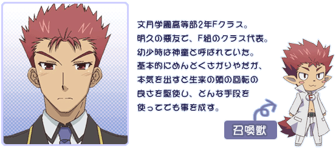

概要
高等学校を舞台とした「学力試験の点数バトル」という異例のテーマを扱った「バカと美少女達による学園エクスプロージョンラブコメ」。
基本的に主人公の男子高生・吉井明久の視点から一人称形式で物語は進行するが、しばしば他のキャラクターの視点や三人称でも描かれている。
全18巻（本編12巻、短編6巻）。シリーズ累計発行部数は2017年7月時点で730万部を突破している。
第1巻は第8回えんため大賞編集部特別賞受賞作。「このライトノベルがすごい!」作品部門ランキングで2008年度から2013年度まで6年連続でベスト10入りし、2010年度には1位を獲得した。
また、「このラノ10年間のベストランキング」2014年度で3位を記録している。
2009年6月にはまったくモー助・夢唄による漫画版が『月刊少年エース』にて連載開始。
また『ドラゴンエイジ2009年5月号に掲載の6月号予告にてテレビアニメ化が発表され、2010年1月から3月まで第1期が、2011年7月から9月には第2期も放送された。
主要人物
Fクラス
振り分け試験の成績が最底辺だった生徒が集うクラス。男子48名（うち「秀吉」1名）、女子2名が在籍している。
もともとの教室の設備は6クラス中最低で、足の折れたちゃぶ台と腐った畳、綿がほとんど入っていない座布団での授業を強いられる。
吉井 明久（よしい あきひさ）
本作の主人公にして語り部。2年Fクラスに在籍する男子生徒。10月18日生まれ。睦月小学校・長月中学校出身。自称左利き。一人称は「僕」。
誰もが認めるバカで、文月学園におけるバカの代名詞「観察処分者」でもある。論理的な会話にはついていけず、嘘もまともにつけないが、感性は常識人の部類に入り、また他人のために真剣に怒れる真っすぐな心根の持ち主基本的にはツッコミ役だが、バカであるためか図らずもボケになってしまうことも多々ある。
容姿は本人曰く「365度どこから見ても美少年」。
学力は「三権分立」や「酢酸の化学式」を答えられず、遷都の年も覚え間違うほどのレベル、自分が料理をしていたこともあり、料理の問題は得意。召喚獣の戦闘力は最低レベルだが、観察処分者として（教師の雑用などに）召喚獣を操る機会が多いため学年一の操作技術を持っていて、多少の得点差の相手なら互角以上に戦うことができる。バカと言われている反面、雄二が神童と呼ばれなくなった理由に感づいたり、秀吉と優子が入れ替わった時に（正体には気付いてはいないが）秀吉と入れ替わった優子に普段と違うと言うなど鋭い一面がある。よく自分の中の天使と悪魔が出てくるがあまり役に立っていない。
召喚獣の装備は改造学ランに木刀。
FFF団では一級審問官を務めていたが、彼自身もよくFFF団に追い回されている。そのおかげか、作中で階段での三角飛びや校舎の2、3階から飛び降りるなど、運動能力の高さを発揮している。
坂本 雄二（さかもと ゆうじ）

本作の準主人公。2年Fクラス代表。1年生のときからの明久の悪友で、相棒的存在。一人称は「俺」。
180cm強の巨漢で精悍な顔立ちを持つ不良少年。水無月小学校・神無月中学校出身。
小学校時代は並外れた知能を有し「神童」の異名をとっていたが、ある事件を通じて、中学校時代は成績をわざと落として身体を鍛えて喧嘩に明け暮れた。そのため、中学校を卒業した今でも「悪鬼羅刹」の異名で他校の不良から恐れられている。
興味のないことにはとことん無気力で、基本的には己の欲望や保身といった目的でしか行動しないが、やる気を出した時にはかつて「神童」と呼ばれた頭脳の冴えを見せる。試召戦争の際にはクラスの指揮官をつとめ、知謀を巡らして敵対者を容易く罠に嵌め、必要があれば自ら動いて作戦を成功へと導く。喧嘩腰の相手に対しては「パンチから始め、キックで繋ぎ、プロレス技で締める交渉術」を使用することがある。
天然ボケな母親には苦労しており、小学生の頃から自分が料理をしており、明久を唸らせるほどの腕前。
召喚獣の装備は、改造制服にメリケンサック。
姫路 瑞希（ひめじ みずき）
本作のメインヒロインの1人。2年Fクラスに在籍する女子生徒。12月21日生まれ。血液型はＡ型。睦月小学校・長月中学校出身。一人称は「私」で、家族以外には親しい間柄でも丁寧語を用いる。
学年首席である翔子にも匹敵するほどの点数を誇る才女だが身体が弱く、振り分け試験の最中に熱を出して途中退席（0点扱い）してしまい、Fクラスに振り分けられた。体力も最低クラスで、男子と並んで走ることは難しい。
明久とは小学校・中学校の同級生。小学校時代から明久に無自覚ながら思いを寄せており、振り分け試験の際に明久が自分を庇ってくれたことで恋心を自覚する。それ以降何度か明久に告白しようとするも失敗に終わっている。
性格は穏やかで純粋、かつ品行方正。天然ボケの気質でもある。
料理を食材ではなく化学的なイメージで作る（一例として、「すっぱい」から「酸味」を連想した結果、クロロ酢酸を加える。）ため、料理の腕前は文字通り殺人的であり、彼女の料理を食べた者は（おにぎりのようにこれ以上なくシンプルなもので、かつ独自のアレンジを加えなかった場合を除き）確実に死線をさまようことになる。本人は自分の料理の腕前が酷いことを自覚していない。その為、家庭科のテストだけは珍解答を連発している。
召喚獣の装備は、西洋鎧に自身の身長の2倍はある巨大な剣。腕輪を有しており、「熱線」の特殊能力を持つ
島田 美波（しまだ みなみ）
本作のメインヒロインの1人。2年Fクラスに在籍する女子生徒。ドイツ育ちの帰国子女。一人称は「ウチ。
勝気な緑色の瞳と、大きな黄色いリボンで束ねた赤茶色のポニーテールが特徴。すらっとした細身の、スタイルのいい体型で美脚だが貧乳であり、そのことがコンプレックスになっている。瑞希のスタイルを僻むこともあるが、瑞希自身が自分のスタイルに自信がないことを逆手にとり、からかうこともある。
明久とは1年生のときからのクラスメイトで、入学当初は日本語でうまく会話ができずクラスで孤立する中、不器用ながらも明久が自分と接してくれたことがきっかけで親しくなる。
現在は日本語で会話をすることはできるが、漢字はまだ苦手。また混乱するとドイツ語が出てくる癖がある。これは学業成績にも反映されており、本来ならBクラス以上の学力を持っているが、漢字が読めないため問題文を理解できず、古典をはじめとしてほとんどの教科の点が低い。ただし証明問題以外では漢字を使わない数学は得意で、数学に関してはAクラスにも引けを取らない。理系科目も数学ほどではないものの点数は比較的高い。さらに、日本に来てから1年で日本語を習得するなどから、学力はかなり高い。
両親が仕事で不在がちなため、自宅では家事全般を引き受けており料理の腕も確か。明久の作った料理を食べて以来、若干自信をなくしている。
召喚獣の装備は、軍服にサーベル。
木下 秀吉（きのした ひでよし）
2年Fクラスに在籍する男子生徒。1年生のときからの明久の友人。Aクラスの木下優子とは二卵性双生児で双子の弟だが、外見は一卵性のごとく瓜二つ。一人称は「ワシ」で、語尾に「〜じゃ」をつけるなど古風な爺言葉が特徴。
れっきとした男子であるが、そのかわいらしい容貌と小柄で華奢な体格から「稀代の美少女」と称され、最近では男女を超えた「第三の性別・秀吉」として扱われている。
演劇部に所属しており、特技は声帯模写。試召戦争では主に演劇部で鍛えた演技力や声帯模写の能力を活かして作戦に貢献している。毎朝、日課としてジョギングと発声練習を行っている。演劇に打ち込みすぎて勉強が疎かになりがちなためにテストの点は低いが、演劇絡みでモチベーションが上がれば難解な「源氏物語」の原文を読み込むほどの力を発揮する。また頭の回転もいい方で、試召戦争では前線の指揮官の役割を務めることも少なくない。
Fクラスの中ではもっとも常識人の部類に入り、作中ではツッコミ役やフォロー役に回ることが多いが、友人たちがバカなことをやるときは「バカ仲間」として積極的に協力する。女装すれば、通常の女子以上に男子に好意を持たれるほど完璧な女性らしさを持つ。
ジャガイモの芽程度なら食べても多少はびくともしない鉄の胃を持つ（本人談）。
召喚獣の装備は、袴に薙刀。
「このライトノベルがすごい！歴代男性キャラクター部門ランキングTOP10」では2008年度から5年連続でベスト10入りしている。また、2009年度及び2010年度では「女性キャラクター部門」でもベスト10入りを果たしている。
土屋 康太（つちや こうた）
2年Fクラスに在籍する男子生徒。1年生のときからの明久の友人。一人称は「俺」だが、基本的に寡黙なため口数は少ない。
並外れたスケベ心を持ち、本心に実直な行動を取るが、それを絶対に認めないことから「ムッツリーニ（寡黙なる性識者）」の異名を取る。
下睫毛と後ろにはねた髪型が特徴。男子にしては小柄だが、引き締まった身体で運動神経もよい。外見はやや幼く、漫画「バカとテストと召喚獣 SPINOUT! それが僕らの日常。」では「ムッツリーニの女装が一番かわいい」と評されている。
大半の教科においては明久以上のバカだが、性に関する知識だけは人並みはずれて豊富であり、保健体育のテストでは教師ですら敵わないほどの点数を取ることもある。保健体育のテストでは必ず特殊能力を使用できる点数を獲得し、常に学年1位の座に居座っている。しかし実践を伴わない知識のため、妄想ですら致死レベルの鼻血を噴くほどのウブで、常に輸血パックを携帯している。
下心の副産物から、料理や裁縫などの技術も会得している。また、諜報（盗撮&盗聴）・探索・暗殺・ピッキングなどの技術にも優れた「情報屋」で、裏方のエキスパートとして重宝されている。明久たちにも情報収集や工作の面で度々協力してきた。文月学園では秘密裏に「ムッツリ商会」を営んでおり、その売り上げはデジカメや盗聴機材などの資金になっている。
非常に守備範囲が広く、「幼女」という単語から妄想を膨らませて鼻血を噴いたり、船越女史の実年齢を把握していたり、キャンディーズのメンバーの愛称を記憶している。また文月学園の全校女子生徒のスリーサイズを正確に目測し、定期的にまとめている。愛読書は「ドキドキ女子高生図鑑」。
召喚獣の装備は、小太刀二刀流の忍者装束で、武器は多種多様。腕輪を有しており、「加速」の特殊能力を持つ。
Aクラス
振り分け試験で優秀な成績を収めた上位50人が集うクラス。男子24名、女子26名在籍。教室の面積は通常の教室の6倍で、教室の前面には大型スクリーンが設置されている。また生徒には個人用の冷蔵庫・エアコン・ノートパソコン・リクライニングシート・システムデスクなどが支給される。
霧島 翔子（きりしま しょうこ）
本作のサブヒロインの一人。2年Aクラス代表で、2年生の学年首席。一人称は「私」で、呟くような口調が特徴。
黒髪のストレートロングで、瞳は紫色。スタイルもよい美少女。
作中では男女を問わず人気が高いが、本人は小学校の頃に自分を庇ってくれた出来事がきっかけで雄二に一途な想いを寄せており、「雄二のお嫁さん」になることを夢見ていて、料理などの花嫁修業も欠かさない。
物静かな性格で、普段は落ち着いた振る舞いを見せているが、雄二へのアプローチとなると積極的かつ過激で、正攻法から法に触れかねない行為まで手段を選ばず雄二に結婚を迫っている。また非常に嫉妬深く、理由の如何やことの大小、関わった相手の性別を問わず、雄二の浮気（と思われる言動）を許さない。
学年首席の名に恥じない学力を誇り、一度学んだことは決して忘れないという記憶力を持つ。ただし雄二から教えてもらったことを最優先で覚えているため、雄二から教わった内容が誤っていた場合もそのまま覚えてしまっている。また、機械オンチである。
召喚獣の装備は武者鎧に日本刀。
工藤 愛子（くどう あいこ）
本作のサブヒロインの一人。2年Aクラスに在籍する女子生徒。1年生の終盤に文月学園に転校してきた。一人称は「ボク」。
ボーイッシュな魅力のある美少女。髪はライトグリーンのショートヘアで、瞳は黄色。スリーサイズはB78・W56・H79（自称）。スパッツを常備している。
康太と同じく保健体育を得意としているが、「理論派」の康太とは逆に「実践派」を自称している。康太に次ぐ学年2位の実力を誇る。
さっぱりとした明るく自由な性格で、性に関しては特に奔放。他人をからかうのが好きで、セクハラめいた言動で周囲をよくからかっているが、その点を除けば文月学園では稀に見る常識人で、女子の中では唯一暴力を振るわない人物。
召喚獣の装備はセーラー服に大斧。腕輪を所有しており、攻撃に電気属性を付加することができる。
久保 利光（くぼ としみつ）
2年Aクラスに在籍する男子生徒。メガネをかけた理知的な男子。一人称は「僕」。
学年次席で、2年生の男子の中では最も成績がいい。
紳士的な性格で人当たりも悪くないが、実は明久に対して好意を抱いている。
召喚獣の装備は、死神の鎌（デスサイズ）を装備しており、金の腕輪（風の刃を出す）を使うことができる。
木下 優子（きのした ゆうこ）
2年Aクラスに在籍する女子生徒。秀吉とは二卵性双生児で双子の姉だが、外見は一卵性のごとく瓜二つ。貧乳なのがコンプレックス。一人称は「アタシ」。
学校では社交的で明るい優等生として振る舞っているが、実はかなりズボラで、自宅では常に下着かジャージ姿で生活している。また腐女子であり、自宅にはネット通販で購入した大量のBL本が溜め込まれている。歌は大の苦手。
温厚な弟とは異なり、プライドが高く短気で負けず嫌いな性格。暴力的な一面もあり、秀吉が女装しているのを発見すると即座に人目のない所へ連れ込み折檻する。壁にめり込むほどのパンチやキックを放つこともある。関節技を好んで使い、秀吉の関節を曲がるはずのない方向へ曲げて外すという拷問を多用する。試験召喚戦争中は最前線の指揮を執ることが多い。
召喚獣の装備は、西洋鎧とランス。
Bクラス
教室の面積は通常の教室の3倍。雄二曰く「代表が代表なだけにあまりまとまりがない」クラス。
根本 恭二（ねもと きょうじ）
2年Bクラス代表。卑怯な手段を使うことで有名。
Fクラスとの試召戦争では妨害工作や教師を人質に取るといった作戦を展開したが敗北。加えて日頃の行いの悪さが災いしてクラスメイトに見限られ、Fクラスに売られた挙句、女装写真集「生まれ変わったワタシを見て！」を作らされる。
召喚獣の装備は、大きな羽飾りのついた騎士風の出で立ちとなっている。
Cクラス
教室の面積は通常の教室の2倍。
Dクラス
教室の設備は「ちょっと貧しい普通の高校レベル」。
清水 美春（しみず みはる）
2年Dクラスに在籍する、縦ロールをツインテールにした女子生徒。一人称は「美春」で、語尾に「〜ですわ」を付けるなど、お嬢様口調が特徴。
同性愛者で、美波を一人の女性として猛烈に愛しており、彼女のことを「お姉さま」と呼んで慕っている。その一方で、男を「豚」と称するほど毛嫌いしており、特に美波と接点の多い明久に敵意を抱いている。美波を我が物にするためには手段を選ばない危険人物で、美波に対する思いが高ずると言語能力が怪しくなり、全身から邪悪なオーラを発することから「新種の召喚獣」と勘違いされたこともある。一方で美波の気持ちを理解できる数少ない人物でもあり、美波からは迷惑ながらもいい友達と思われている。細身の貧乳美人が好み。
召喚獣はローマ兵風で、グラディウスとロリカ・セグメンタタを装備している。
Eクラス
部活に念頭を置いて学園生活を送っている生徒が多い「体育会系クラス」。
用語
文月学園高等部（ふみづきがくえんこうとうぶ）
本作の舞台となる高等学校。革新的な学力低下対策として「試験召喚システム」を導入している。進学校であるため、クラス発表は個人個人に渡されており、同時に最新技術の「実験場」としても扱われており、多くのスポンサーが付いているため生徒の学費は極めて安く抑えられている。
生徒を大量に取られたことから近隣の高校からは目の敵にされており、また試験校のため経営が世論に左右されやすく、イメージの低下を避けるため不祥事は大っぴらにできないという問題点がある。
試験召喚獣
化学とオカルトと偶然によって完成した「試験召喚システム」によって姿を現す、召喚者をデフォルメした姿の分身。全長は80cmほど。文月学園のテストを受けた人間が、当該科目の召喚フィールド内で起動ワード「試験召喚獣召喚・試獣召喚（サモン）！」」を詠唱することにより出現する。
総合科目の点数に比例した武器・防具を装備し（攻撃力は勝負科目に比例する）、召喚獣による「設備の異なる教室状況」を改善するためのクラス間抗争「試験召喚戦争」（通称「試召戦争」）の手段となる。
たとえ1桁の点数でもゴリラ並みのパワーを持つが、「観察処分者」を除く一般生徒の召喚獣が触れることが出来るのは原則として他の召喚獣や仮想体だけである。
召喚獣の声は召喚者の声よりずっと高い。
- テスト
- 試験召喚システムに対応した学力試験。通常のテストと異なり点数上限が存在せず、時間内であれば無制限に問題を解くことができる。基本的には「1科目につき400点以上」が成績優秀者の目安となる。
- 現在確認されている教科は現代国語、古典、数学、物理、化学、生物、地学、地理、日本史、世界史、現代社会、英語、保健体育の13教科に加えそれらの合計である「総合科目」の14教科である。ただし「総合科目」の点数は、センター試験を意識した点数配分が行われるため純粋な合計ではないこともありうる。
- 召喚フィールド
- 召喚獣は、教師の展開する半径10メートル程度（個人差あり）の召喚フィールドの中でのみ使用できる。通常、教師の「承認!」の掛け声でフィールドが展開されるが教師の意思でも展開可能。なお2つ以上のフィールドを極端に近い位置で展開すると、フィールドが互いに「干渉」し消滅する。
- 戦闘システム
- 召喚者のテストの点数は召喚獣のヒットポイントのようなものに変換され、腕輪の使用や防御をするごとに減少する。点数が0になった召喚獣は「戦死」し、戦死した召喚獣の召喚者は試召戦争終結までの間、補習室送りとなる。テストの点数は自動回復しないが、別室で「補充試験（補給テスト）」を受けることにより点数を回復することが出来る。
- 実戦では操作の習熟や戦略・戦術により、点数差が覆されることもしばしばである。
- 腕輪
- テストの点が単科目400点以上の生徒の召喚獣には「腕輪」が与えられ、点数を消費する代わりに腕輪に対応した特殊能力が使用可能になる。
- 物理干渉能力
- 「観察処分者」と教師の召喚獣は物理干渉能力を持っており、荷物運びや物体の物理的な破壊などを行うことが出来る。しかし物理干渉能力を持つ召喚獣は、召喚獣に与えられたダメージに対するフィードバックがある。これには荷物運びによる疲労なども含まれるため、そういった教師の雑用は「観察処分者」が行うことになる。
- これは試験召喚システムの調整によって変更できる設定で、すべての召喚獣にフィードバックを適用できる。
- 文月学園におけるクラス設備の奪取・奪還および召喚戦争のルール（1巻より抜粋）
- 一、原則としてクラス対抗戦とする。各科目担当教師の立会いにより試験召喚システムが起動し、召喚が可能となる。なお、総合科目勝負は学年主任の立会いのもとでのみ可能。
- 二、召喚獣は各人一体のみ所有。この召喚獣は、該当科目においてもっとも近い時期に受けたテストの点数に比例した力を持つ。総合科目については各科目最新の点数の和がこれにあたる。
- 三、召喚獣が消耗するとその割合に応じて点数も減点され、戦死にいたると0点となり、その戦争を行っている間は補習室にて補習を受講する義務を負う。
- 四、召喚獣はとどめを刺されて戦死しない限りは、テストを受けなおして点数を補充することで何度でも回復可能である。
- 五、相手が召喚獣を喚びだしたにもかかわらず召喚を行わなかった場合は戦闘放棄とみなし、戦死者同様に補習室にて戦争終了まで補習を受ける。
- 六、召喚可能範囲は、担当教師の周囲半径10メートル程度（個人差あり）。
- 七、戦争の勝敗は、クラス代表の敗北を持ってのみ決定される。この勝負に対し、教師が認めた勝負である限り、経緯や手段は不問とする。あくまでもテストの点数を用いた戦争であるという点を常に意識すること。
- その他のルール・慣習
-
- 上位クラスは宣戦布告を断ることは出来ない。上位クラスは試召戦争によるメリットは特別の事情を有しない限り無いため、布告した生徒は上位クラスの生徒達にしばしばリンチを受ける。敗北した側が下位クラスだった場合、下位クラスの設備が1段階下がる（Fクラスの場合、ちゃぶ台&畳からみかん箱&ござ、その下は画板&シートになる）。逆に上位クラスが敗北した場合、下位クラスと教室設備が入れ替わる（通常は使用されないが、上位クラスが勝利した場合に、勝利したクラスが望めば下位クラスのランクダウンした設備と設備交換の権利を行使することは可能）。
- 基本的に代表を討ち取るまで戦いは続くが、両者が望めば勝敗なしでの終結も可能。そのためクラス代表が撃破された場合でも、撃破した側が敗北設備を交換か条件を呑んでの引き分けなどの二択を提示した場合、勝敗なしでの決着もあり得る。
- 勝敗が決した場合、負けたクラスは3カ月の間自分達から試召戦争の申し込みはできない（ただし、勝敗が発生しなかった場合は適用されない）。これは負けたクラスがすぐにを行うことによる泥沼化を防ぐ為。
- 両クラスの合意の上でかつ、テストの点数を用いていれば別の方法（代表を選出しての「一騎討ち」、通常と違う「小学生レベル」かつ「点数上限あり」のテストなど）での勝負も可能である。
- 戦争に負けてランクを落とされた設備は学期が変わる毎にリセットされる。
- 試召戦争が行われている間は、クラス代表は居場所を公開する義務がある。
観察処分者（かんさつしょぶんしゃ）
学生生活を送る上で問題のある生徒に課せられる処分で、文月学園におけるバカの代名詞。作中では、明久が学園創設史上初の観察処分者となっている。
基本的には教師の雑用係であり、雑用をこなすために観察処分者の召喚獣は特例として物に触れることができる。ただし、召喚獣の受けた痛みや疲労は召喚者にフィードバックされる仕様となっている。
ムッツリ商会（ムッツリしょうかい）
康太が文月学園で秘密裏に営んでいる個人商店。彼が撮影した写真や、写真を加工した抱き枕カバーやシャワーカーテンなどを生徒に販売している。この商店での売り上げは、デジタルカメラや盗聴機材などの購入に当てられており、康太の情報収集の資金源となっている。
主力商品は女子生徒の写真だが、最近では男子生徒の写真にも常連の顧客がついており、経営者の康太も売れ筋を読めない状態となっている。
FFF団
2年Fクラスに存在する異端審問会。秀吉や女子生徒にアプローチした生徒や、女子から好意を寄せられている生徒に対して粛清を行う。主に明久と雄二が粛清されていて、ごくたまに秀吉も縛られている（FFF団長・須川亮の趣味）。ムッツリ商会が協賛しており、活動の報酬としてムッツリ商会から月1回1AP（＝AKICHAN photograph）が支給される。
会長は須川亮。団員は全員、黒い覆面とマントを着用し、鎌を所持している。元ネタはKKK
.png)